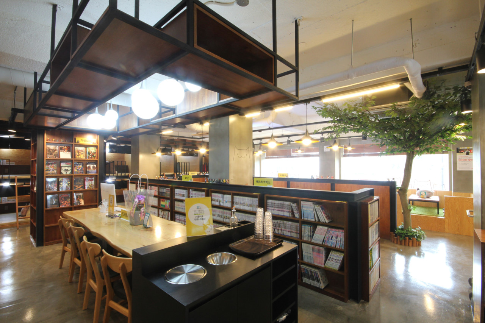

#놀숲 한양대점

위치: 서울특별시 성동구 마조로 11 3층
영업시간: 매일 11:00~24:00
가격: 1시간 이용료(2400원)
한양대역과 가까워 시간 보내기 좋다. 만화를 읽어도 되고 좌식 공간에 들어가 잠깐 눈을 붙이기에도 좋다. 인기가 많은 도서(ex.슬램덩크)의 경우 여러 권을 구비해두어 다른 지점보다 좋다. 이번 학기는 총학생회와 제휴하여 한양대 학생은 평일 B,C,D 요금제 이용시 음료 리필도 가능하니 안 가본 한양대생이라면 이번 기회에 가보자.
홈페이지